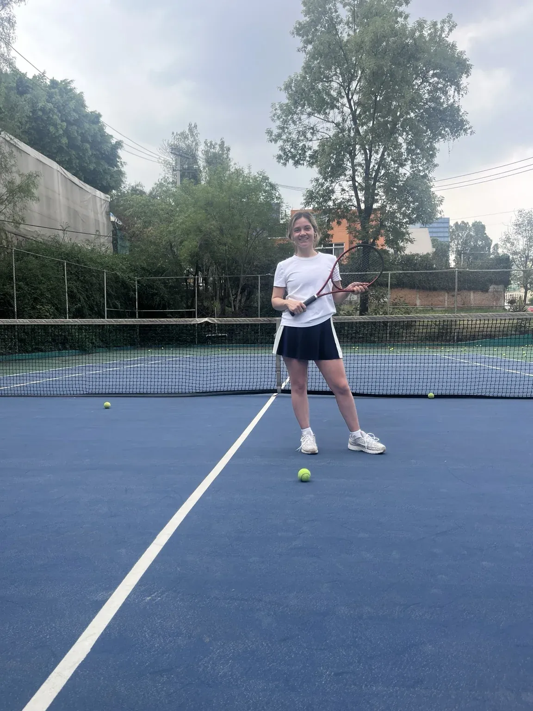

Tenis fácil de empezar
Clases de tenis para niños, jóvenes y adultos en Satélite y Naucalpan.
Dinos para quién buscas clases y te orientamos por WhatsApp. No necesitas saber qué programa, nivel o modalidad elegir.
Solo elige una opción. Pedro te ayuda con edad, nivel, sede, horario y la mejor alternativa para tu caso.
Clases de 1 hora
Desde 4 años
Principiantes a avanzados

Una enseñanza que se adapta.
Técnica, coordinación y confianza según edad y nivel.
Lo importante
No se trata solo de pegarle a la pelota.
Una buena clase puede ayudar a que el alumno entienda mejor el juego, se mueva con más seguridad y disfrute realmente estar en la cancha.
Aprender bien
Fundamentos claros desde el inicio para evitar malos hábitos.
Ganar confianza
Progresar con objetivos alcanzables y una enseñanza adaptada al alumno.
Mejorar movimiento
Coordinación, desplazamientos, equilibrio y control corporal.
Para mamás y papás que buscan algo más que una actividad
Menos pantallas. Más confianza, disciplina y movimiento.
El tenis puede convertirse en una rutina saludable que enseña a manejar la frustración, mejora la concentración y ayuda a construir seguridad dentro y fuera de la cancha.
DisciplinaRutinas y objetivos claros.
ConcentraciónAtención y toma de decisiones.
ConfianzaProgreso gradual y seguridad.
Condición físicaMovimiento, coordinación y actividad.
Cómo se coordinan las clases
Simple, claro y sin complicaciones.
Tú solo nos dices si buscas clases para tu hijo/a o para ti. Pedro te orienta y juntos confirman la mejor opción.
1
Elige para quién buscas
Para tu hijo/a o para ti.
2
Habla con Pedro por WhatsApp
Sin formularios largos ni preguntas complicadas.
3
Confirman la opción adecuada
Edad, nivel, sede y horario se revisan contigo antes de reservar.
Programas
Opciones para cada etapa.
Si quieres conocer más detalles, aquí puedes ver la información por edad. No necesitas elegir un programa antes de escribirnos.

Jóvenes · 11 a 16 años
Técnica, estrategia, movilidad y preparación para jugar mejor.
Ver información →
Adultos · desde 17 años
Para aprender, retomar o mejorar con atención personalizada.
Ver información →
Metodología respaldada
Enseñanza con formación técnica, física y mental.
Pedro Tennis integra experiencia de entrenamiento con formación en biomecánica, psicología deportiva, ciencias del deporte, ciencias del ejercicio e inteligencia emocional.
Biomecánica
Psicología deportiva
Ciencias del deporte
Zonas de atención
Satélite, Naucalpan, Polanco y Atizapán.
También se atienden áreas aledañas a Ciudad Satélite, sujeto a disponibilidad de horario y cancha.
Satélite
Ciudad Satélite y zonas cercanasNaucalpan
Consulta disponibilidadPolanco
Consulta disponibilidadAtizapán
Consulta disponibilidadSesiones reales
Conoce el ambiente de las clases y clínicas.
Las imágenes muestran sesiones de Pedro Tennis y permiten conocer de manera directa el trabajo que se realiza en cancha.


¿Dónde entrenamos?
De acuerdo con la disponibilidad, las clases pueden realizarse en estas canchas:
GeógrafosCentro CívicoCalacoaya
La cancha y el horario se confirman previamente con el alumno o la familia. Estos espacios no son sucursales propias de Pedro Tennis.
Clases infantiles
Aprendizaje, coordinación y diversión en la cancha
Ve cómo se trabaja en cancha.
Reproduce los videos aquí mismo, sin salir de la página.
Video de clases infantiles 1
Video de clases infantiles 2
Video de clases infantiles 3
Lo que dicen nuestras familias
Experiencias compartidas por nuestras familias.
Comentarios de familias y alumnos que ya forman parte de Pedro Tennis.
Mis hijas han mejorado su disciplina y confianza. Ahora esperan con emoción cada entrenamiento.
Excelente entrenador, muy profesional y con gran trato con los niños. 100% recomendado.
Las clases son dinámicas y retadoras. Mi hija ha avanzado muchísimo y ahora compite en torneos.
Comunidad Pedro Tennis
Más que clases: una comunidad dentro y fuera de la cancha.
La experiencia puede incluir comunicación, convivencia y actividades que ayudan a mantener la motivación, de acuerdo con el calendario y la disponibilidad.
Grupo de WhatsAppAvisos e información directa.
Torneos internosCompetencias amistosas cuando se programan.
EventosActividades sujetas a convocatoria.
Retos y dinámicasPropuestas para acompañar el avance.
¿Quieres empezar sin complicarte?
Escríbele a Pedro por WhatsApp y él te orienta sobre la mejor opción.